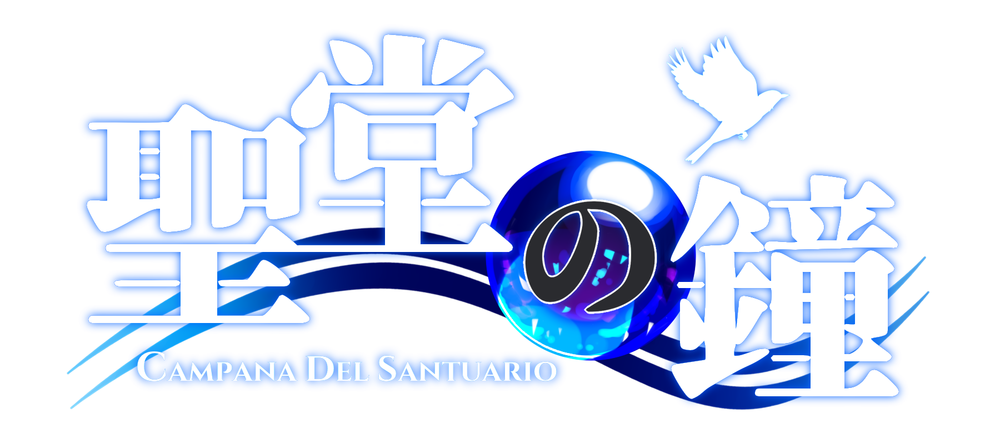

タイプ：特殊型 人数：4 リミット：3 シーン表：水の都シーン表

シナリオ『聖堂の鐘』の大幅なネタバレを含みます。
リプレイを読むと、同じシナリオを遊ぶことができなくなります。
また、公開の場で当リプレイについて言及していただく際は、
【各PCの秘密】や【対立構造】などのネタバレにならないようにお願いします。
GM：てんなな
PC1：スズナ
PC2：蒸しパン
PC3：さかな
PC4：おかゆ
ロゴデザイン：おかゆ
本サイトのプレイログは、「河嶋陶一朗」「冒険企画局」「株式会社新紀元社」が権利を有する『忍術バトルRPG シノビガミ』の二次創作物です。
（C）河嶋陶一朗／冒険企画局／新紀元社